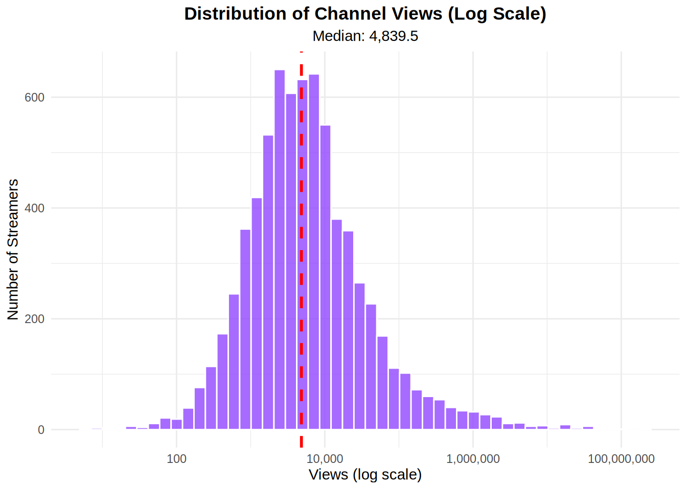
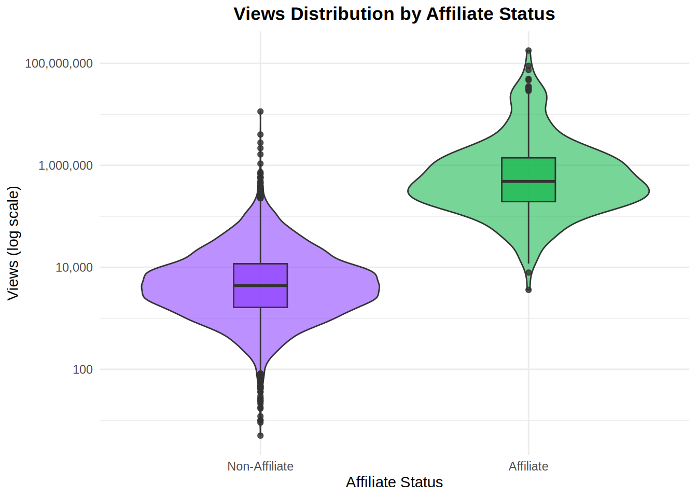
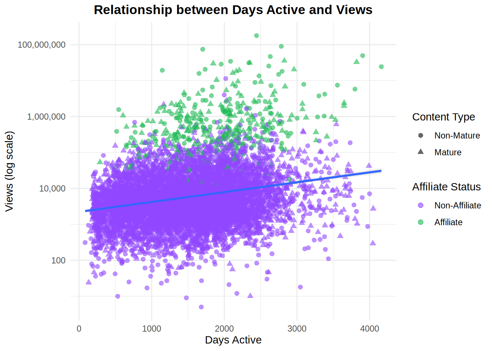

# Load required libraries
library(tidyverse)
library(ggplot2)
library(scales)
library(knitr)
# Set theme for plots
theme_set(theme_minimal())Twitch Network Exploratory Data Analysis
Explore the Twitch streamer network dataset to understand node attributes before applying centrality measures.
# Read the Twitch nodes data
twitch_nodes <- read_csv("../../../data/twitch/Twitch_nodes.csv")
# Display data structure
cat("Dataset dimensions:", nrow(twitch_nodes), "rows,", ncol(twitch_nodes), "columns\n")Dataset dimensions: 7126 rows, 6 columnsData Overview
The Twitch dataset contains information about streamers including: - ID: Streamer identifier - Days_active: Number of days the streamer has been active - Mature_content: Whether the channel contains mature content (TRUE/FALSE) - Views: Total number of views - Affiliate: Whether the streamer has affiliate status (TRUE/FALSE) - Channel_ID: Unique channel identifier
# Create a summary table of data types
data_summary <- data.frame(
Variable = names(twitch_nodes),
Type = sapply(twitch_nodes, class),
Missing = sapply(twitch_nodes, function(x) sum(is.na(x))),
Unique = sapply(twitch_nodes, function(x) length(unique(x))),
stringsAsFactors = FALSE
)
kable(data_summary, caption = "Data Structure Summary")| Variable | Type | Missing | Unique | |
|---|---|---|---|---|
| ID | ID | numeric | 0 | 7126 |
| Days_active | Days_active | numeric | 0 | 2565 |
| Mature_content | Mature_content | logical | 0 | 2 |
| Views | Views | numeric | 0 | 5822 |
| Affiliate | Affiliate | logical | 0 | 2 |
| Channel_ID | Channel_ID | numeric | 0 | 7126 |
Distribution Analysis
Views Distribution
# Calculate summary statistics
views_summary <- twitch_nodes %>%
summarise(
Min = min(Views),
Q1 = quantile(Views, 0.25),
Median = median(Views),
Mean = mean(Views),
Q3 = quantile(Views, 0.75),
Max = max(Views)
)
kable(views_summary, caption = "Views Summary Statistics", format.args = list(big.mark = ","))| Min | Q1 | Median | Mean | Q3 | Max |
|---|---|---|---|---|---|
| 5 | 1,743 | 4,839.5 | 193,470.2 | 15,263 | 178,500,544 |
# Create histogram with log scale
p1 <- ggplot(twitch_nodes, aes(x = Views)) +
geom_histogram(bins = 50, fill = "#9146FF", alpha = 0.8, color = "white") +
scale_x_log10(labels = comma) +
geom_vline(aes(xintercept = median(Views)),
color = "red", linetype = "dashed", size = 1) +
labs(title = "Distribution of Channel Views (Log Scale)",
subtitle = paste("Median:", format(median(twitch_nodes$Views), big.mark = ",")),
x = "Views (log scale)",
y = "Number of Streamers") +
theme(plot.title = element_text(hjust = 0.5, face = "bold"),
plot.subtitle = element_text(hjust = 0.5))
p1
Categorical Variables
# Create summary tables
categorical_summary <- bind_rows(
twitch_nodes %>%
count(Mature_content) %>%
mutate(Variable = "Mature Content",
Category = as.character(Mature_content),
Percentage = round(n / sum(n) * 100, 1)),
twitch_nodes %>%
count(Affiliate) %>%
mutate(Variable = "Affiliate Status",
Category = as.character(Affiliate),
Percentage = round(n / sum(n) * 100, 1))
) %>%
select(Variable, Category, n, Percentage)
kable(categorical_summary, caption = "Categorical Variables Distribution")| Variable | Category | n | Percentage |
|---|---|---|---|
| Mature Content | FALSE | 3238 | 45.4 |
| Mature Content | TRUE | 3888 | 54.6 |
| Affiliate Status | FALSE | 6742 | 94.6 |
| Affiliate Status | TRUE | 384 | 5.4 |
Relationship Analysis
Affiliate Status vs Views
p2 <- twitch_nodes %>%
mutate(Affiliate = factor(Affiliate,
levels = c(FALSE, TRUE),
labels = c("Non-Affiliate", "Affiliate"))) %>%
ggplot(aes(x = Affiliate, y = Views, fill = Affiliate)) +
geom_violin(alpha = 0.6) +
geom_boxplot(width = 0.2, alpha = 0.8) +
scale_y_log10(labels = comma) +
scale_fill_manual(values = c("#9146FF", "#1DB954")) +
labs(title = "Views Distribution by Affiliate Status",
x = "Affiliate Status",
y = "Views (log scale)") +
theme(legend.position = "none",
plot.title = element_text(hjust = 0.5, face = "bold"))
p2
Days Active vs Views
p3 <- ggplot(twitch_nodes, aes(x = Days_active, y = Views)) +
geom_point(aes(color = Affiliate, shape = Mature_content),
alpha = 0.6, size = 2) +
scale_y_log10(labels = comma) +
scale_color_manual(values = c("#9146FF", "#1DB954"),
labels = c("Non-Affiliate", "Affiliate")) +
scale_shape_manual(values = c(16, 17),
labels = c("Non-Mature", "Mature")) +
geom_smooth(method = "lm", se = TRUE, alpha = 0.2) +
labs(title = "Relationship between Days Active and Views",
x = "Days Active",
y = "Views (log scale)",
color = "Affiliate Status",
shape = "Content Type") +
theme(plot.title = element_text(hjust = 0.5, face = "bold"))
p3
Cross-tabulation Analysis
# Create detailed cross-tabulation
cross_analysis <- twitch_nodes %>%
group_by(Mature_content, Affiliate) %>%
summarise(
Count = n(),
Avg_Views = mean(Views),
Median_Views = median(Views),
Avg_Days_Active = mean(Days_active),
.groups = "drop"
) %>%
mutate(
Avg_Views = round(Avg_Views),
Avg_Days_Active = round(Avg_Days_Active),
Mature_content = ifelse(Mature_content, "Mature", "Non-Mature"),
Affiliate = ifelse(Affiliate, "Affiliate", "Non-Affiliate")
)
kable(cross_analysis,
caption = "Average Metrics by Content Type and Affiliate Status",
format.args = list(big.mark = ","))| Mature_content | Affiliate | Count | Avg_Views | Median_Views | Avg_Days_Active |
|---|---|---|---|---|---|
| Non-Mature | Non-Affiliate | 3,041 | 18,934 | 3,261 | 1,487 |
| Non-Mature | Affiliate | 197 | 4,393,289 | 478,931 | 1,966 |
| Mature | Non-Affiliate | 3,701 | 17,297 | 5,584 | 1,514 |
| Mature | Affiliate | 187 | 2,094,097 | 488,224 | 1,913 |
Statistical Tests
# Affiliate status comparison
affiliate_test <- t.test(log10(Views + 1) ~ Affiliate, data = twitch_nodes)
cat("T-test: Affiliate vs Non-Affiliate (log-transformed views)\n")T-test: Affiliate vs Non-Affiliate (log-transformed views)cat("t =", round(affiliate_test$statistic, 4), "\n")t = -54.6025 cat("p-value =", format.pval(affiliate_test$p.value), "\n")p-value = < 2.22e-16 cat("Mean difference =", round(diff(affiliate_test$estimate), 4), "log units\n")Mean difference = 2.095 log unitsTop Performers
# Identify top 10 channels by views
top_channels <- twitch_nodes %>%
arrange(desc(Views)) %>%
slice_head(n = 10) %>%
mutate(
Rank = row_number(),
Views = format(Views, big.mark = ","),
Content_Type = ifelse(Mature_content, "Mature", "Non-Mature"),
Status = ifelse(Affiliate, "Affiliate", "Non-Affiliate")
) %>%
select(Rank, Channel_ID, Views, Days_active, Content_Type, Status)
kable(top_channels, caption = "Top 10 Twitch Channels by Views")| Rank | Channel_ID | Views | Days_active | Content_Type | Status |
|---|---|---|---|---|---|
| 1 | 27942990 | 178,500,544 | 2443 | Non-Mature | Affiliate |
| 2 | 20786541 | 89,506,813 | 2784 | Non-Mature | Affiliate |
| 3 | 56648155 | 74,201,622 | 1703 | Non-Mature | Affiliate |
| 4 | 261715 | 49,482,563 | 3904 | Non-Mature | Affiliate |
| 5 | 23735582 | 46,682,923 | 2632 | Non-Mature | Affiliate |
| 6 | 19623411 | 35,482,126 | 2825 | Mature | Affiliate |
| 7 | 39677337 | 34,356,681 | 2086 | Non-Mature | Affiliate |
| 8 | 497952 | 32,861,608 | 3820 | Mature | Affiliate |
| 9 | 30623831 | 31,417,100 | 2338 | Non-Mature | Affiliate |
| 10 | 30281925 | 30,977,250 | 2351 | Mature | Affiliate |
Key Insights
# Calculate key metrics
insights <- list(
total_streamers = nrow(twitch_nodes),
avg_views = mean(twitch_nodes$Views),
median_views = median(twitch_nodes$Views),
affiliate_rate = mean(twitch_nodes$Affiliate) * 100,
mature_content_rate = mean(twitch_nodes$Mature_content) * 100,
views_ratio = mean(twitch_nodes$Views) / median(twitch_nodes$Views)
)Summary of Key Findings:
- Total streamers analyzed: 7,126
- Highly skewed viewership: Average views (193,470) are 40x higher than median views (4,839.5), indicating extreme concentration
- Affiliate rate: Only 5.4% of streamers have affiliate status
- Mature content: 54.6% of channels are marked as mature
- Affiliate advantage: Affiliate streamers have significantly higher viewership (p < 0.001)
This analysis provides context for understanding how node attributes might relate to network centrality measures in the Twitch streamer ecosystem.
Perform
Ponder
Network centrality applications
Borgatti, S. P. (2005). Centrality and network flow. Social Networks, 27(1), 55-71.
Identifying key players in networks
Borgatti, S. P. (2006). Identifying sets of key players in a social network. Computational & Mathematical Organization Theory, 12(1), 21-34.
Centrality in organizational networks
Sparrowe, R. T., Liden, R. C., Wayne, S. J., & Kraimer, M. L. (2001). Social networks and the performance of individuals and groups. Academy of Management Journal, 44(2), 316-325.